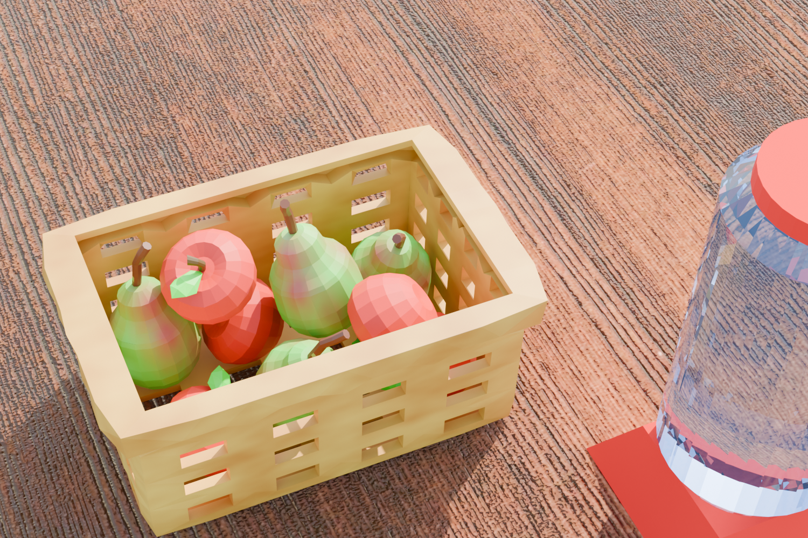
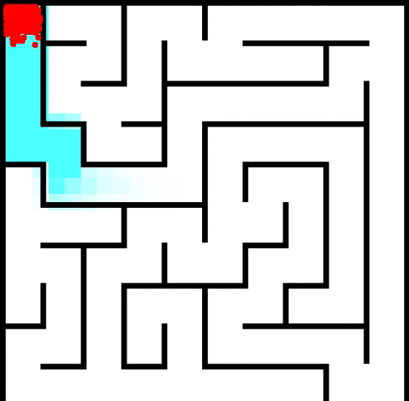
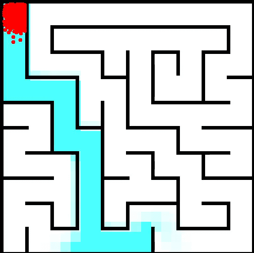
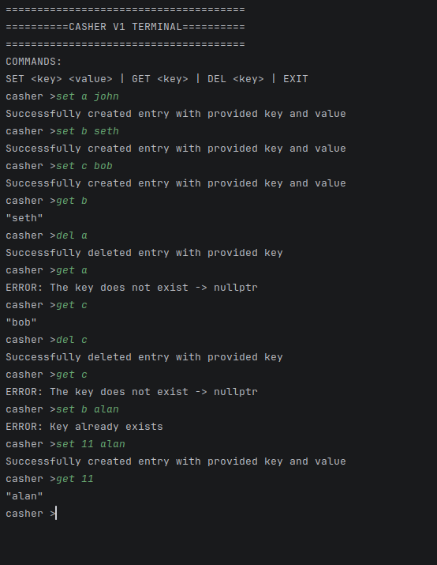
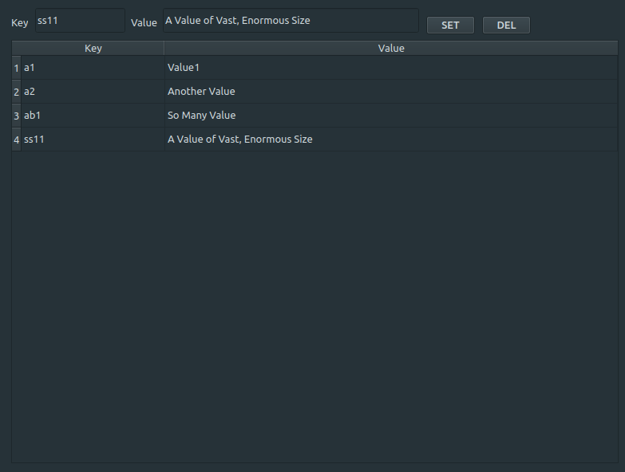
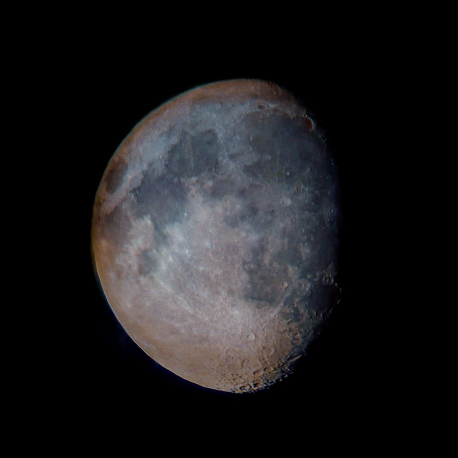

About & Background
Software and Game dev, with completed university coursework in Computer Science at the University of Primorska (UP FAMNIT).
I have experience with web development through HTML, CSS, JS, PHP and MySQL. I have also hosted sites on my personal computers in the past. I have made multiple projects in Java and C++, as well as a few game prototypes on Godot using GDScript, for which I made all the assets used in them. I am currently hosting 2 projects, which you can check out further in this page.
My Cool Projects
Genetic Algorithm


I wrote this Genetic Algorithm program that simulates entities moving through a maze, and selects for entities that get closest to the other end of the maze. The project is written entirely in Java and contains simple classes for initializing the maze, finding a valid path and movement. The project is available for download and is receiving updates on my github page here
Casher - A Hash Table database


Casher is a custom in-memory key-value store built in C++, the program supports very basic data structure operations such as SET and DEL, the separate terminal has a GET command along with a few other QOL commands. Promised SAVE and LOAD commands have been added, the main focus will be the app with the Qt UI and letting the database accept many more things other than a simple string. Available here
Other Projects (3D Models, Photography, etc.)
Low Poly Fruit Asset Pack
These low poly fruits were made in blender with extremely simple texturing and modeling techniques, perfect for an indie farming game. Once the pack is complete a few assets will be hosted on my github and on itch.io for free, while the full pack will be for sale for anywhere between 1-4 euros, depending on the amount of assets I end up making.
If you're interested in modeling, or want a model/s done for
a project, I am available.
Amateur Astrophotography

I often do Astrophotography when the sky is clear, the best of these pictures will be hosted on this site on a separate page dedicated to photography.